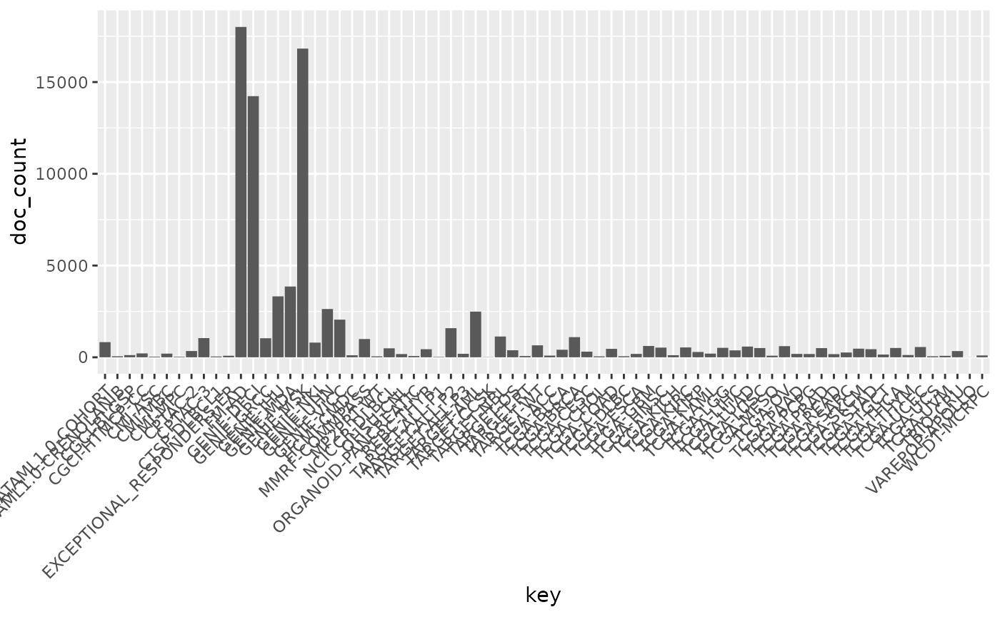
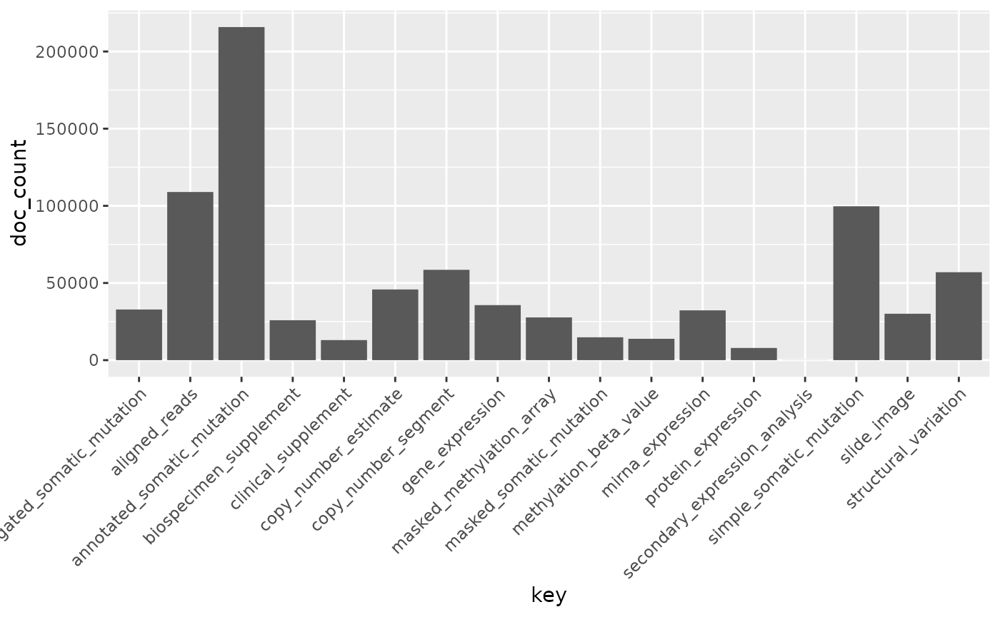

Abstract
The National Cancer Institute (NCI) has established the Genomic Data Commons (GDC). The GDC provides the cancer research community with an open and unified repository for sharing and accessing data across numerous cancer studies and projects via a high-performance data transfer and query infrastructure. The GenomicDataCommons Bioconductor package provides basic infrastructure for querying, accessing, and mining genomic datasets available from the GDC. We expect that the Bioconductor developer and the larger bioinformatics communities will build on the GenomicDataCommons package to add higher-level functionality and expose cancer genomics data to the plethora of state-of-the-art bioinformatics methods available in Bioconductor.
From the Genomic Data Commons (GDC) website:
The National Cancer Institute’s (NCI’s) Genomic Data Commons (GDC) is a data sharing platform that promotes precision medicine in oncology. It is not just a database or a tool; it is an expandable knowledge network supporting the import and standardization of genomic and clinical data from cancer research programs.
The GDC contains NCI-generated data from some of the largest and most comprehensive cancer genomic datasets, including The Cancer Genome Atlas (TCGA) and Therapeutically Applicable Research to Generate Effective Therapies (TARGET). For the first time, these datasets have been harmonized using a common set of bioinformatics pipelines, so that the data can be directly compared.
As a growing knowledge system for cancer, the GDC also enables researchers to submit data, and harmonizes these data for import into the GDC. As more researchers add clinical and genomic data to the GDC, it will become an even more powerful tool for making discoveries about the molecular basis of cancer that may lead to better care for patients.
The data model for the GDC is complex, but it worth a quick overview. The data model is encoded as a so-called property graph. Nodes represent entities such as Projects, Cases, Diagnoses, Files (various kinds), and Annotations. The relationships between these entities are maintained as edges. Both nodes and edges may have Properties that supply instance details. The GDC API exposes these nodes and edges in a somewhat simplified set of RESTful endpoints.
This software is in development and will likely change in response to user feedback. To report bugs or problems, either submit a new issue or submit a bug.report(package='GenomicDataCommons') from within R (which will redirect you to the new issue on GitHub).
Installation is available from GitHub as of now.
source('https://bioconductor.org/biocLite.R')
biocLite('GenomicDataCommons')library(GenomicDataCommons)GenomicDataCommons::status()## $commit
## [1] "26591980c486de18fbaabb91c7f6545a9e7432fb"
##
## $data_release
## [1] "Data Release 8.0 - August 22, 2017"
##
## $status
## [1] "OK"
##
## $tag
## [1] "1.10.0"
##
## $version
## [1] 1If this statement results in an error such as SSL connect error, see the troubleshooting section below.
The following code builds a manifest that can be used to guide the download of raw data. Here, filtering finds gene expression files quantified as raw counts using HTSeq from ovarian cancer patients.
This code block downloads the 379 gene expression files specified in the query above. Using multiple processes to do the download very significantly speeds up the transfer in many cases. On a standard 1Gb connection, the following completes in about 30 seconds.
destdir = tempdir()
fnames = lapply(ge_manifest$id[1:20],gdcdata,
destination_dir=destdir,overwrite=TRUE,
progress=FALSE)If the download had included controlled-access data, the download above would have needed to include a token. Details are available in the authentication section below.
expands = c("diagnoses","annotations",
"demographic","exposures")
clinResults = cases() %>%
GenomicDataCommons::select(NULL) %>%
GenomicDataCommons::expand(expands) %>%
results(size=50)
clinDF = as.data.frame(clinResults)
library(DT)
datatable(clinDF, extensions = 'Scroller', options = list(
deferRender = TRUE,
scrollY = 200,
scrollX = TRUE,
scroller = TRUE
))This package design is meant to have some similarities to the “hadleyverse” approach of dplyr. Roughly, the functionality for finding and accessing files and metadata can be divided into:
In addition, there are exhiliary functions for asking the GDC API for information about available and default fields, slicing BAM files, and downloading actual data files. Here is an overview of functionality1.
There are two main classes of operations when working with the NCI GDC.
Both classes of operation are reviewed in detail in the following sections.
Vast amounts of metadata about cases (patients, basically), files, projects, and so-called annotations are available via the NCI GDC API. Typically, one will want to query metadata to either focus in on a set of files for download or transfer or to perform so-called aggregations (pivot-tables, facets, similar to the R table() functionality).
Querying metadata starts with creating a “blank” query. One will often then want to filter the query to limit results prior to retrieving results. The GenomicDataCommons package has helper functions for listing fields that are available for filtering.
In addition to fetching results, the GDC API allows faceting, or aggregating,, useful for compiling reports, generating dashboards, or building user interfaces to GDC data (see GDC web query interface for a non-R-based example).
A query of the GDC starts its life in R. Queries follow the four metadata endpoints available at the GDC. In particular, there are four convenience functions that each create GDCQuery objects (actually, specific subclasses of GDCQuery):
pquery = projects()The pquery object is now an object of (S3) class, GDCQuery (and gdc_projects and list). The object contains the following elements:
projects() function, the default fields from the GDC are used (see default_fields())filter() method and will be used to filter results on retrieval.aggregations().Looking at the actual object (get used to using str()!), note that the query contains no results.
str(pquery)## List of 5
## $ fields : chr [1:10] "dbgap_accession_number" "disease_type" "intended_release_date" "name" ...
## $ filters: NULL
## $ facets : NULL
## $ legacy : logi FALSE
## $ expand : NULL
## - attr(*, "class")= chr [1:3] "gdc_projects" "GDCQuery" "list"[ GDC pagination documentation ]
With a query object available, the next step is to retrieve results from the GDC. The GenomicDataCommons package. The most basic type of results we can get is a simple count() of records available that satisfy the filter criteria. Note that we have not set any filters, so a count() here will represent all the project records publicly available at the GDC in the “default” archive"
## [1] 39The results() method will fetch actual results.
presults = pquery %>% results()These results are returned from the GDC in JSON format and converted into a (potentially nested) list in R. The str() method is useful for taking a quick glimpse of the data.
str(presults)## List of 8
## $ dbgap_accession_number: chr [1:10] NA NA NA NA ...
## $ disease_type :List of 10
## ..$ TCGA-LIHC: chr "Liver Hepatocellular Carcinoma"
## ..$ TCGA-HNSC: chr "Head and Neck Squamous Cell Carcinoma"
## ..$ TCGA-COAD: chr "Colon Adenocarcinoma"
## ..$ TCGA-PAAD: chr "Pancreatic Adenocarcinoma"
## ..$ TARGET-WT: chr "High-Risk Wilms Tumor"
## ..$ TCGA-UCS : chr "Uterine Carcinosarcoma"
## ..$ TCGA-UVM : chr "Uveal Melanoma"
## ..$ TCGA-STAD: chr "Stomach Adenocarcinoma"
## ..$ TCGA-LUSC: chr "Lung Squamous Cell Carcinoma"
## ..$ TCGA-UCEC: chr "Uterine Corpus Endometrial Carcinoma"
## $ released : logi [1:10] TRUE TRUE TRUE TRUE TRUE TRUE ...
## $ state : chr [1:10] "legacy" "legacy" "legacy" "legacy" ...
## $ primary_site :List of 10
## ..$ TCGA-LIHC: chr "Liver"
## ..$ TCGA-HNSC: chr "Head and Neck"
## ..$ TCGA-COAD: chr "Colorectal"
## ..$ TCGA-PAAD: chr "Pancreas"
## ..$ TARGET-WT: chr "Kidney"
## ..$ TCGA-UCS : chr "Uterus"
## ..$ TCGA-UVM : chr "Eye"
## ..$ TCGA-STAD: chr "Stomach"
## ..$ TCGA-LUSC: chr "Lung"
## ..$ TCGA-UCEC: chr "Uterus"
## $ project_id : chr [1:10] "TCGA-LIHC" "TCGA-HNSC" "TCGA-COAD" "TCGA-PAAD" ...
## $ id : chr [1:10] "TCGA-LIHC" "TCGA-HNSC" "TCGA-COAD" "TCGA-PAAD" ...
## $ name : chr [1:10] "Liver Hepatocellular Carcinoma" "Head and Neck Squamous Cell Carcinoma" "Colon Adenocarcinoma" "Pancreatic Adenocarcinoma" ...
## - attr(*, "row.names")= int [1:10] 1 2 3 4 5 6 7 8 9 10
## - attr(*, "class")= chr [1:3] "GDCprojectsResults" "GDCResults" "list"A default of only 10 records are returned. We can use the size and from arguments to results() to either page through results or to change the number of results. Finally, there is a convenience method, results_all() that will simply fetch all the available results given a query. Note that results_all() may take a long time and return HUGE result sets if not used carefully. Use of a combination of count() and results() to get a sense of the expected data size is probably warranted before calling results_all()
length(ids(presults))## [1] 10presults = pquery %>% results_all()
length(ids(presults))## [1] 39## [1] TRUEExtracting subsets of results or manipulating the results into a more conventional R data structure is not easily generalizable. However, the purrr, rlist, and data.tree packages are all potentially of interest for manipulating complex, nested list structures. For viewing the results in an interactive viewer, consider the listviewer package.
In the case of the projects entity, the default results (using default fields, that is) can be simplified easily with as.data.frame.
head(as.data.frame(presults))## project_id dbgap_accession_number released state id
## 1 TARGET-AML phs000465 TRUE legacy TARGET-AML
## 2 TARGET-CCSK phs000466 TRUE legacy TARGET-CCSK
## 3 TARGET-NBL phs000467 TRUE legacy TARGET-NBL
## 4 TARGET-OS phs000468 TRUE legacy TARGET-OS
## 5 TARGET-RT phs000470 TRUE legacy TARGET-RT
## 6 TARGET-WT phs000471 TRUE legacy TARGET-WT
## name disease_type primary_site
## 1 Acute Myeloid Leukemia Acute My.... Blood
## 2 Clear Cell Sarcoma of the Kidney Clear Ce.... Kidney
## 3 Neuroblastoma Neurobla.... Nervous ....
## 4 Osteosarcoma Osteosarcoma Bone
## 5 Rhabdoid Tumor Rhabdoid.... Kidney
## 6 High-Risk Wilms Tumor High-Ris.... KidneyCentral to querying and retrieving data from the GDC is the ability to specify which fields to return, filtering by fields and values, and faceting or aggregating. The GenomicDataCommons package includes two simple functions, available_fields() and default_fields(). Each can operate on a character(1) endpoint name (“cases”, “files”, “annotations”, or “projects”) or a GDCQuery object.
default_fields('files')## [1] "access" "acl"
## [3] "created_datetime" "data_category"
## [5] "data_format" "data_type"
## [7] "error_type" "experimental_strategy"
## [9] "file_autocomplete" "file_id"
## [11] "file_name" "file_size"
## [13] "file_state" "md5sum"
## [15] "origin" "platform"
## [17] "revision" "state"
## [19] "state_comment" "submitter_id"
## [21] "tags" "type"
## [23] "updated_datetime"# The number of fields available for files endpoint
length(available_fields('files'))## [1] 592# The first few fields available for files endpoint
head(available_fields('files'))## [1] "access" "acl"
## [3] "analysis.analysis_id" "analysis.analysis_type"
## [5] "analysis.created_datetime" "analysis.input_files.access"The fields to be returned by a query can be specified following a similar paradigm to that of the dplyr package. The select() function is a verb that resets the fields slot of a GDCQuery; note that this is not quite analogous to the dplyr select() verb that limits from already-present fields. We completely replace the fields when using select() on a GDCQuery.
# Default fields here
qcases = cases()
qcases$fields## [1] "aliquot_ids" "analyte_ids"
## [3] "case_autocomplete" "case_id"
## [5] "created_datetime" "days_to_index"
## [7] "days_to_lost_to_followup" "disease_type"
## [9] "index_date" "lost_to_followup"
## [11] "portion_ids" "primary_site"
## [13] "sample_ids" "slide_ids"
## [15] "state" "submitter_aliquot_ids"
## [17] "submitter_analyte_ids" "submitter_id"
## [19] "submitter_portion_ids" "submitter_sample_ids"
## [21] "submitter_slide_ids" "updated_datetime"# set up query to use ALL available fields
# Note that checking of fields is done by select()
qcases = cases() %>% GenomicDataCommons::select(available_fields('cases'))
head(qcases$fields)## [1] "case_id" "aliquot_ids"
## [3] "analyte_ids" "annotations.annotation_id"
## [5] "annotations.case_id" "annotations.case_submitter_id"Finding fields of interest is such a common operation that the GenomicDataCommons includes the grep_fields() function and the field_picker() widget. See the appropriate help pages for details.
The GDC API offers a feature known as aggregation or faceting. By specifying one or more fields (of appropriate type), the GDC can return to us a count of the number of records matching each potential value. This is similar to the R table method. Multiple fields can be returned at once, but the GDC API does not have a cross-tabulation feature; all aggregations are only on one field at a time. Results of aggregation() calls come back as a list of data.frames (actually, tibbles).
# total number of files of a specific type
res = files() %>% facet(c('type','data_type')) %>% aggregations()
res$type## key doc_count
## 1 aligned_reads 45988
## 2 annotated_somatic_mutation 45577
## 3 simple_somatic_mutation 45577
## 4 copy_number_segment 44752
## 5 gene_expression 34722
## 6 mirna_expression 22976
## 7 methylation_beta_value 12359
## 8 biospecimen_supplement 11328
## 9 clinical_supplement 11169
## 10 aggregated_somatic_mutation 144
## 11 masked_somatic_mutation 132Using aggregations() is an also easy way to learn the contents of individual fields and forms the basis for faceted search pages.
[ GDC filtering documentation ]
The GenomicDataCommons package uses a form of non-standard evaluation to specify R-like queries that are then translated into an R list. That R list is, upon calling a method that fetches results from the GDC API, translated into the appropriate JSON string. The R expression uses the formula interface as suggested by Hadley Wickham in his vignette on non-standard evaluation
It’s best to use a formula because a formula captures both the expression to evaluate and the environment where the evaluation occurs. This is important if the expression is a mixture of variables in a data frame and objects in the local environment [for example].
For the user, these details will not be too important except to note that a filter expression must begin with a “~”.
## [1] 274724To limit the file type, we can refer back to the section on faceting to see the possible values for the file field “type”. For example, to filter file results to only “gene_expression” files, we simply specify a filter.
qfiles = files() %>% filter(~ type == 'gene_expression')
# here is what the filter looks like after translation
str(get_filter(qfiles))## List of 2
## $ op :Classes 'scalar', 'character' chr "="
## $ content:List of 2
## ..$ field: chr "type"
## ..$ value: chr "gene_expression"What if we want to create a filter based on the project (‘TCGA-OVCA’, for example)? Well, we have a couple of possible ways to discover available fields. The first is based on base R functionality and some intuition.
grep('pro',available_fields('files'),value=TRUE)## [1] "cases.diagnoses.progression_free_survival"
## [2] "cases.diagnoses.progression_free_survival_event"
## [3] "cases.diagnoses.progression_or_recurrence"
## [4] "cases.project.dbgap_accession_number"
## [5] "cases.project.disease_type"
## [6] "cases.project.intended_release_date"
## [7] "cases.project.name"
## [8] "cases.project.primary_site"
## [9] "cases.project.program.dbgap_accession_number"
## [10] "cases.project.program.name"
## [11] "cases.project.program.program_id"
## [12] "cases.project.project_id"
## [13] "cases.project.releasable"
## [14] "cases.project.released"
## [15] "cases.project.state"
## [16] "cases.samples.days_to_sample_procurement"
## [17] "cases.samples.method_of_sample_procurement"
## [18] "cases.samples.portions.slides.number_proliferating_cells"
## [19] "cases.tissue_source_site.project"Interestingly, the project information is “nested” inside the case. We don’t need to know that detail other than to know that we now have a few potential guesses for where our information might be in the files records. We need to know where because we need to construct the appropriate filter.
files() %>% facet('cases.project.project_id') %>% aggregations()## $cases.project.project_id
## key doc_count
## 1 TCGA-BRCA 27207
## 2 TCGA-LUAD 14804
## 3 TCGA-UCEC 13604
## 4 TCGA-LUSC 13124
## 5 TCGA-HNSC 12895
## 6 TCGA-LGG 12603
## 7 TCGA-THCA 12703
## 8 TCGA-OV 13054
## 9 TCGA-PRAD 12568
## 10 TCGA-COAD 11824
## 11 TCGA-SKCM 11265
## 12 TCGA-KIRC 12272
## 13 TCGA-STAD 10731
## 14 TCGA-BLCA 10193
## 15 TCGA-GBM 9657
## 16 TCGA-LIHC 9511
## 17 TCGA-CESC 7349
## 18 TCGA-KIRP 7368
## 19 TCGA-SARC 6282
## 20 TCGA-ESCA 4473
## 21 TCGA-PAAD 4433
## 22 TCGA-PCPG 4422
## 23 TCGA-READ 4012
## 24 TCGA-LAML 3954
## 25 TCGA-TGCT 3636
## 26 TARGET-NBL 2806
## 27 TCGA-THYM 2974
## 28 TARGET-AML 1873
## 29 TCGA-ACC 2108
## 30 TARGET-WT 1324
## 31 TCGA-MESO 2050
## 32 TCGA-UVM 1928
## 33 TCGA-KICH 1853
## 34 TCGA-UCS 1364
## 35 TCGA-CHOL 1157
## 36 TCGA-DLBC 1163
## 37 TARGET-OS 4
## 38 TARGET-RT 174
## 39 TARGET-CCSK 2We note that cases.project.project_id looks like it is a good fit. We also note that TCGA-OV is the correct project_id, not TCGA-OVCA. Note that unlike with dplyr and friends, the filter() method here replaces the filter and does not build on any previous filters.
qfiles = files() %>% filter( ~ cases.project.project_id == 'TCGA-OV' & type == 'gene_expression')
str(get_filter(qfiles))## List of 2
## $ op :Classes 'scalar', 'character' chr "and"
## $ content:List of 2
## ..$ :List of 2
## .. ..$ op :Classes 'scalar', 'character' chr "="
## .. ..$ content:List of 2
## .. .. ..$ field: chr "cases.project.project_id"
## .. .. ..$ value: chr "TCGA-OV"
## ..$ :List of 2
## .. ..$ op :Classes 'scalar', 'character' chr "="
## .. ..$ content:List of 2
## .. .. ..$ field: chr "type"
## .. .. ..$ value: chr "gene_expression"qfiles %>% count()## [1] 1137Asking for a count() of results given these new filter criteria gives 1137 results. Generating a manifest for bulk downloads is as simple as asking for the manifest from the current query.
manifest_df = qfiles %>% manifest()
head(manifest_df)## # A tibble: 6 x 5
## id
## <chr>
## 1 ae81b121-4ee4-40b2-ab69-5821d992c0e5
## 2 af86f9fc-c9fd-4ce3-a842-c1a718feba60
## 3 0fcd50f3-71b0-4c52-8468-42561f4d60a8
## 4 a12332f0-a812-4379-b46c-e714b63f43bc
## 5 103d151d-2c67-4b4f-aade-8afbd106146f
## 6 37947dd8-72b2-493a-bc4b-d45699c04389
## # ... with 4 more variables: filename <chr>, md5 <chr>, size <int>,
## # state <chr>Note that we might still not be quite there. Looking at filenames, there are suspiciously named files that might include “FPKM”, “FPKM-UQ”, or “counts”. Another round of grep and available_fields, looking for “type” turned up that the field “analysis.workflow_type” has the appropriate filter criteria.
qfiles = files() %>% filter( ~ cases.project.project_id == 'TCGA-OV' &
type == 'gene_expression' &
analysis.workflow_type == 'HTSeq - Counts')
manifest_df = qfiles %>% manifest()
nrow(manifest_df)## [1] 379The GDC Data Transfer Tool can be used (from R, transfer() or from the command-line) to orchestrate high-performance, restartable transfers of all the files in the manifest. See the bulk downloads section for details.
[ GDC authentication documentation ]
The GDC offers both “controlled-access” and “open” data. As of this writing, only data stored as files is “controlled-access”; that is, metadata accessible via the GDC is all “open” data and some files are “open” and some are “controlled-access”. Controlled-access data are only available after going through the process of obtaining access.
After controlled-access to one or more datasets has been granted, logging into the GDC web portal will allow you to access a GDC authentication token, which can be downloaded and then used to access available controlled-access data via the GenomicDataCommons package.
The GenomicDataCommons uses authentication tokens only for downloading data (see transfer and gdcdata documentation). The package includes a helper function, gdc_token, that looks for the token to be stored in one of three ways (resolved in this order):
GDC_TOKEN
GDC_TOKEN_FILE
.gdc_token
As a concrete example:
The gdcdata function takes a character vector of one or more file ids. A simple way of producing such a vector is to produce a manifest data frame and then pass in the first column, which will contain file ids.
fnames = gdcdata(manifest_df$id[1:2],progress=FALSE)Note that for controlled-access data, a GDC authentication token is required. Using the BiocParallel package may be useful for downloading in parallel, particularly for large numbers of smallish files.
The bulk download functionality is only efficient (as of v1.2.0 of the GDC Data Transfer Tool) for relatively large files, so use this approach only when transferring BAM files or larger VCF files, for example. Otherwise, consider using the approach shown above, perhaps in parallel.
mfile = tempfile()
write.table(manifest_df[1:50,],mfile,
col.names=TRUE, row.names=FALSE, quote=FALSE,sep="\t")
transfer(mfile,gdc_client='gdc-client')## [1] "/var/folders/21/b_rp6qyj1_b1j5cp8qby0tnr0000gn/T//Rtmp2IAw9P/file11e79670989de"res = cases() %>% facet("project.project_id") %>% aggregations()
head(res)## $project.project_id
## key doc_count
## 1 TARGET-NBL 1127
## 2 TCGA-BRCA 1098
## 3 TARGET-AML 988
## 4 TARGET-WT 652
## 5 TCGA-GBM 617
## 6 TCGA-OV 608
## 7 TCGA-LUAD 585
## 8 TCGA-UCEC 560
## 9 TCGA-KIRC 537
## 10 TCGA-HNSC 528
## 11 TCGA-LGG 516
## 12 TCGA-THCA 507
## 13 TCGA-LUSC 504
## 14 TCGA-PRAD 500
## 15 TCGA-SKCM 470
## 16 TCGA-COAD 461
## 17 TCGA-STAD 443
## 18 TCGA-BLCA 412
## 19 TARGET-OS 381
## 20 TCGA-LIHC 377
## 21 TCGA-CESC 307
## 22 TCGA-KIRP 291
## 23 TCGA-SARC 261
## 24 TCGA-LAML 200
## 25 TCGA-ESCA 185
## 26 TCGA-PAAD 185
## 27 TCGA-PCPG 179
## 28 TCGA-READ 172
## 29 TCGA-TGCT 150
## 30 TCGA-THYM 124
## 31 TCGA-KICH 113
## 32 TCGA-ACC 92
## 33 TCGA-MESO 87
## 34 TCGA-UVM 80
## 35 TARGET-RT 75
## 36 TCGA-DLBC 58
## 37 TCGA-UCS 57
## 38 TCGA-CHOL 51
## 39 TARGET-CCSK 13library(ggplot2)
ggplot(res$project.project_id,aes(x = key, y = doc_count)) +
geom_bar(stat='identity') +
theme(axis.text.x = element_text(angle = 45, hjust = 1)) 
# The need to do the "&" here is a requirement of the
# current version of the GDC API. I have filed a feature
# request to remove this requirement.
resp = cases() %>% filter(~ project.project_id=='TCGA-BRCA' &
project.project_id=='TCGA-BRCA' ) %>%
facet('samples.sample_type') %>% aggregations()
resp$samples.sample_type## key doc_count
## 1 Primary Tumor 1098
## 2 Blood Derived Normal 1011
## 3 Solid Tissue Normal 162
## 4 Metastatic 7# The need to do the "&" here is a requirement of the
# current version of the GDC API. I have filed a feature
# request to remove this requirement.
resp = cases() %>% filter(~ project.project_id=='TCGA-BRCA' &
samples.sample_type=='Solid Tissue Normal') %>%
GenomicDataCommons::select(c(default_fields(cases()),'samples.sample_type')) %>%
response_all()
count(resp)## [1] 162res = resp %>% results()
str(res[1],list.len=6)## List of 1
## $ updated_datetime: chr [1:162] "2017-03-04T16:39:19.244769-06:00" "2017-03-04T16:39:19.244769-06:00" "2017-03-04T16:39:19.244769-06:00" "2017-03-04T16:39:19.244769-06:00" ...head(ids(resp))## [1] "858652b8-c4c2-41d8-be32-fdc88e1a7bb0"
## [2] "2680da86-c977-4611-b75f-df015283c023"
## [3] "96b9c7db-1be1-4b60-b47c-26b654c3d64c"
## [4] "d9fd2724-7db0-4af3-ac14-217bdfa5203f"
## [5] "7b892055-c59d-4550-8688-ad039790af3d"
## [6] "ec0ab947-9341-4fff-bda4-fdfb9434d508"res = files() %>% facet('type') %>% aggregations()
res$type## key doc_count
## 1 aligned_reads 45988
## 2 annotated_somatic_mutation 45577
## 3 simple_somatic_mutation 45577
## 4 copy_number_segment 44752
## 5 gene_expression 34722
## 6 mirna_expression 22976
## 7 methylation_beta_value 12359
## 8 biospecimen_supplement 11328
## 9 clinical_supplement 11169
## 10 aggregated_somatic_mutation 144
## 11 masked_somatic_mutation 132ggplot(res$type,aes(x = key,y = doc_count)) + geom_bar(stat='identity') +
theme(axis.text.x = element_text(angle = 45, hjust = 1)) 
q = files() %>%
GenomicDataCommons::select(available_fields('files')) %>%
filter(~ cases.project.project_id=='TCGA-GBM' &
data_type=='Gene Expression Quantification')
q %>% facet('analysis.workflow_type') %>% aggregations()## $analysis.workflow_type
## key doc_count
## 1 HTSeq - Counts 174
## 2 HTSeq - FPKM 174
## 3 HTSeq - FPKM-UQ 174# so need to add another filter
file_ids = q %>% filter(~ cases.project.project_id=='TCGA-GBM' &
data_type=='Gene Expression Quantification' &
analysis.workflow_type == 'HTSeq - Counts') %>%
GenomicDataCommons::select('file_id') %>%
response_all() %>%
ids()I need to figure out how to do slicing reproducibly in a testing environment and for vignette building.
q = files() %>%
GenomicDataCommons::select(available_fields('files')) %>%
filter(~ cases.project.project_id == 'TCGA-GBM' &
data_type == 'Aligned Reads' &
experimental_strategy == 'RNA-Seq' &
data_format == 'BAM')
file_ids = q %>% response_all() %>% ids()Symptom: Trying to connect to the API results in:
Error in curl::curl_fetch_memory(url, handle = handle) :
SSL connect erroropenssl to version 1.0.1 or later.
openssl, reinstall the R curl and httr packages.sessionInfo()## R version 3.4.1 (2017-06-30)
## Platform: x86_64-apple-darwin15.6.0 (64-bit)
## Running under: macOS Sierra 10.12.4
##
## Matrix products: default
## BLAS: /Library/Frameworks/R.framework/Versions/3.4/Resources/lib/libRblas.0.dylib
## LAPACK: /Library/Frameworks/R.framework/Versions/3.4/Resources/lib/libRlapack.dylib
##
## locale:
## [1] en_US.UTF-8/en_US.UTF-8/en_US.UTF-8/C/en_US.UTF-8/en_US.UTF-8
##
## attached base packages:
## [1] stats graphics grDevices utils datasets base
##
## other attached packages:
## [1] ggplot2_2.2.1.9000 DT_0.2
## [3] GenomicDataCommons_1.1.3 magrittr_1.5
## [5] knitr_1.17
##
## loaded via a namespace (and not attached):
## [1] Rcpp_0.12.12 plyr_1.8.4
## [3] compiler_3.4.1 GenomeInfoDb_1.12.2
## [5] XVector_0.16.0 methods_3.4.1
## [7] bitops_1.0-6 tools_3.4.1
## [9] zlibbioc_1.22.0 digest_0.6.12
## [11] jsonlite_1.5 evaluate_0.10.1
## [13] tibble_1.3.4 gtable_0.2.0
## [15] rlang_0.1.2 curl_2.8.1
## [17] yaml_2.1.14 parallel_3.4.1
## [19] GenomeInfoDbData_0.99.0 stringr_1.2.0
## [21] httr_1.2.1 xml2_1.1.1
## [23] S4Vectors_0.14.3 htmlwidgets_0.9
## [25] IRanges_2.10.2 hms_0.3
## [27] stats4_3.4.1 rprojroot_1.2
## [29] grid_3.4.1 data.table_1.10.4
## [31] R6_2.2.2 rmarkdown_1.6
## [33] readr_1.1.1 backports_1.1.0
## [35] scales_0.5.0.9000 htmltools_0.3.6
## [37] BiocGenerics_0.22.0 GenomicRanges_1.28.4
## [39] colorspace_1.3-2 labeling_0.3
## [41] stringi_1.1.5 munsell_0.4.3
## [43] RCurl_1.95-4.8 lazyeval_0.2.0S3 object-oriented programming paradigm is used.See individual function and methods documentation for specific details.↩